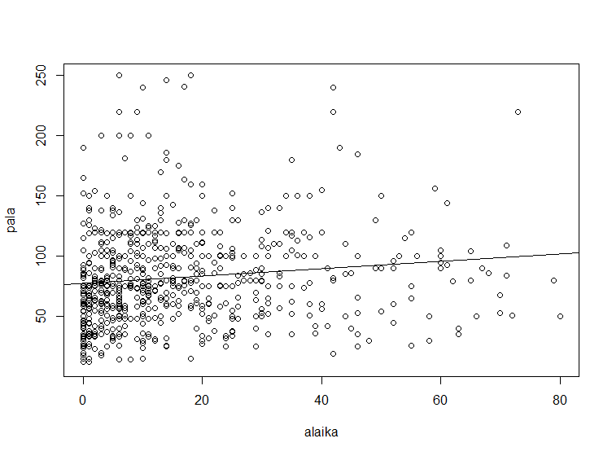

Tilastotieteen harjoitustyö 2021 - tulosteet
TILM3558
-
Marko Järvinen
-
518467
-
mabeja@utu.fi
Numeeristen vastemuuttujien mallitus
Varianssianalyysi
Tehdään Shapiro-Wilk -testit:
with(miehet.dat, tapply(pala, list(ahtas), shapiro.test))
$ahdas
Shapiro-Wilk normality test
data: X[[i]]
W = 0.82567, p-value = 0.0004974
$normaali
Shapiro-Wilk normality test
data: X[[i]]
W = 0.937, p-value = 2.601e-08
$tilava
Shapiro-Wilk normality test
data: X[[i]]
W = 0.90287, p-value = 0.0003138
with(naiset.dat, tapply(pala, list(ahtas), shapiro.test))
$ahdas
Shapiro-Wilk normality test
data: X[[i]]
W = 0.79111, p-value = 8.226e-07
$normaali
Shapiro-Wilk normality test
data: X[[i]]
W = 0.97689, p-value = 0.0001528
$tilava
Shapiro-Wilk normality test
data: X[[i]]
W = 0.88275, p-value = 3.274e-05
Tehdään kaksisuuntainen varianssianalyysi:
attach(oma.otos1)
library(car)
anova(lm(pala~supu*ahtas))
Analysis of Variance Table
Response: pala
Df Sum Sq Mean Sq F value Pr(>F)
supu 1 14079 14079 11.2152 0.0008552 ***
ahtas 2 224646 112323 89.4741 < 2.2e-16 ***
supu:ahtas 2 2645 1323 1.0536 0.3492552
Residuals 693 869970 1255
---
Signif. codes: 0 ‘***’ 0.001 ‘**’ 0.01 ‘*’ 0.05 ‘.’ 0.1 ‘ ’ 1
Regressiomalli
Tehdään sirontakuviot:
# sirontakuvio, kotitalouden kuluttajayksiköiden lukumäärä
plot(rkyks, pala)
abline(lm(pala~rkyks))
# sirontakuvio, asumismenot
plot(asmenot, pala)
abline(lm(pala~asmenot))
# sirontakuvio, alueella asumisaika
plot(alaika, pala)
abline(lm(pala~alaika))

Lasketaan Pearsonin ja Spearmanin korrelaatiokertoimet:
cor.test(rkyks, pala, method="pearson")
Pearson's product-moment correlation
data: rkyks and pala
t = 16.689, df = 698, p-value < 2.2e-16
alternative hypothesis: true correlation is not equal to 0
95 percent confidence interval:
0.4788992 0.5850014
sample estimates:
cor
0.5340498
cor.test(rkyks, pala, method="spearman", exact=FALSE)
Spearman's rank correlation rho
data: rkyks and pala
S = 23536100, p-value < 2.2e-16
alternative hypothesis: true rho is not equal to 0
sample estimates:
rho
0.588289
cor.test(asmenot, pala, method="pearson")
Pearson's product-moment correlation
data: asmenot and pala
t = 3.1341, df = 698, p-value = 0.001796
alternative hypothesis: true correlation is not equal to 0
95 percent confidence interval:
0.04408516 0.19024524
sample estimates:
cor
0.1178032
cor.test(asmenot, pala, method="spearman", exact=FALSE)
Spearman's rank correlation rho
data: asmenot and pala
S = 53065037, p-value = 0.05779
alternative hypothesis: true rho is not equal to 0
sample estimates:
rho
0.07174673
cor.test(alaika, pala, method="pearson")
Pearson's product-moment correlation
data: alaika and pala
t = 3.3166, df = 697, p-value = 0.0009583
alternative hypothesis: true correlation is not equal to 0
95 percent confidence interval:
0.05096213 0.19698204
sample estimates:
cor
0.1246469
cor.test(alaika, pala, method="spearman", exact=FALSE)
Spearman's rank correlation rho
data: alaika and pala
S = 45362605, p-value = 6.099e-08
alternative hypothesis: true rho is not equal to 0
sample estimates:
rho
0.2030729
Kolmen selittäjän regressiomalli:
lm.pala <- lm(pala~rkyks+asmenot+alaika)
summary(lm.pala)
Call:
lm(formula = pala ~ rkyks + asmenot + alaika)
Residuals:
Min 1Q Median 3Q Max
-73.746 -21.769 -4.384 14.573 193.452
Coefficients:
Estimate Std. Error t value Pr(>|t|)
(Intercept) 1.506e+01 4.315e+00 3.491 0.000511 ***
rkyks 2.697e+01 1.656e+00 16.288 < 2e-16 ***
asmenot 5.191e-04 2.793e-04 1.859 0.063454 .
alaika 3.738e-01 8.113e-02 4.608 4.84e-06 ***
---
Signif. codes: 0 ‘***’ 0.001 ‘**’ 0.01 ‘*’ 0.05 ‘.’ 0.1 ‘ ’ 1
Residual standard error: 33.34 on 695 degrees of freedom
(1 observation deleted due to missingness)
Multiple R-squared: 0.305, Adjusted R-squared: 0.302
F-statistic: 101.6 on 3 and 695 DF, p-value: < 2.2e-16
Toistomittausmalli
Suoritetaan toistettujen mittausten varianssianalyysi. Tarkistetaan ensin
onko normaalijakaumaoletus voimassa Shapiro-Wilk -testeillä:
shapiro.test(Functional_M2)
Shapiro-Wilk normality test
data: Functional_M2
W = 0.85935, p-value < 2.2e-16
shapiro.test(Functional_M1)
Shapiro-Wilk normality test
data: Functional_M1
W = 0.6801, p-value < 2.2e-16
Tehdään Friedmanin testi:
attach(data)
friedman.test(Functional_Value ~ Functional | patient, data=data)
detach(data)
Friedman rank sum test
data: Functional_Value and Functional and patient
Friedman chi-squared = 65.621, df = 1, p-value = 5.465e-16
Friedmanin testin p-arvo on alle 0,001, joten muuttujien välillä on tilastollisesti merkitseviä eroja.
Tehdään muuttujien välinen vertailu Wilcoxonin testillä:
attach(oma.otos2)
wilcox.test(Functional_M1, Functional_M2, paired = TRUE)
Wilcoxon signed rank test with continuity correction
data: Functional_M1 and Functional_M2
V = 73584, p-value < 2.2e-16
alternative hypothesis: true location shift is not equal to 0
Tehdään toistettujen mittausten varianssianalyysi, jossa luokitteleva tekijä on sukupuoli (D2).
attach(data)
summary(aov(Functional_Value ~ D2 * Functional + Error(patient / Functional), data=data))
detach(data)
Error: patient
Df Sum Sq Mean Sq
D2 1 1.563 1.563
Error: patient:Functional
Df Sum Sq Mean Sq
Functional 1 14.93 14.93
Error: Within
Df Sum Sq Mean Sq F value Pr(>F)
D2 1 0.1 0.098 0.234 0.628
Functional 1 11.1 11.138 26.676 2.84e-07 ***
D2:Functional 1 0.1 0.090 0.217 0.642
Residuals 1136 474.3 0.418
---
Signif. codes: 0 ‘***’ 0.001 ‘**’ 0.01 ‘*’ 0.05 ‘.’ 0.1 ‘ ’ 1
Kategoristen vastemuuttujien mallitus
Muuttujien riippuvuusrakenne
Tehdään frekvenssitaulukot:
table(d2)
d2
Mies Nainen
443 442
table(d32)
d32
En Kyllä
760 125
table(K23)
k23
en kylla
282 477
Kolmen muuttujan ristiintaulu:
ftable(table(d2, d32, k23))
k23 en kylla
d2 d32
Mies En 103 230
Kyllä 17 34
Nainen En 135 196
Kyllä 27 17
Loglineaarinen mallitus:
library(MASS)
mytable <- xtabs(~ d2 + d32 + k23, data=oma.otos3)
malli <- loglm(~ d2 + k23 + d32 + d2*k23+d32, mytable)
malli
Call:
loglm(formula = ~d2 + k23 + d32 + d2 * k23 + d32, data = mytable)
Statistics:
X^2 df P(> X^2)
Likelihood Ratio 7.174578 3 0.06653670
Pearson 6.879393 3 0.07584292
Mikä on standardoitujen jäännösten vaihteluväli?
stdres = residuals(malli, "pearson")
summary(stdres)
Min. 1st Qu. Median Mean 3rd Qu. Max.
-1.87090 -0.28614 0.05173 0.02328 0.56014 1.49309
Tehdään jatkotarkastelu ristiintauluin:
taulu1 <- table(d2, k23)
prop.table(taulu1, 1)
k23
d2 en kylla
Mies 0.3125 0.6875
Nainen 0.4320 0.5680
taulu2 <- table(d32, k23)
prop.table(taulu2, 1)
k23
d32 en kylla
En 0.3584337 0.6415663
Kyllä 0.4631579 0.5368421
Kaksiluokkainen selitettävä muuttuja
Logistinen binäärinen regressio:
tyottomyys <- glm(d32 ~ d1 + d2, data=oma.otos3, family=binomial)
summary(tyottomyys)
Call:
glm(formula = d32 ~ d1 + d2, family = binomial, data = oma.otos3)
Deviance Residuals:
Min 1Q Median 3Q Max
-0.9260 -0.6131 -0.4318 -0.3402 2.3085
Coefficients:
Estimate Std. Error z value Pr(>|z|)
(Intercept) -76.466366 11.677402 -6.548 5.82e-11 ***
d1 0.038054 0.005933 6.414 1.42e-10 ***
d2Nainen -0.216877 0.199012 -1.090 0.276
---
Signif. codes: 0 ‘***’ 0.001 ‘**’ 0.01 ‘*’ 0.05 ‘.’ 0.1 ‘ ’ 1
(Dispersion parameter for binomial family taken to be 1)
Null deviance: 720.77 on 884 degrees of freedom
Residual deviance: 674.14 on 882 degrees of freedom
(15 observations deleted due to missingness)
AIC: 680.14
Number of Fisher Scoring iterations: 5
Selitetään "työtön viimeisen 12 kk:n aikana" kyllä/ei -suhdetta:
exp(cbind(OR=coef(tyottomyys), confint(tyottomyys)))
Waiting for profiling to be done...
OR 2.5 % 97.5 %
(Intercept) 6.181290e-34 4.177260e-44 3.412945e-24
d1 1.038787e+00 1.027008e+00 1.051214e+00
d2Nainen 8.050290e-01 5.438042e-01 1.188132e+00
Mikä on mallin Nagelkerke selitysaste?
install.packages("fmsb")
library(fmsb)
data.nagel <- NagelkerkeR2(tyottomyys)
data.nagel
$N
[1] 885
$R2
[1] 0.09212836
Monimuuttujamenetelmät
Muuttujien ryhmittely
Tehdään pääkomponenttianalyysi:
# korrelaatiokertoimet
data.kor <- cor(oma.otos5, method="pearson", use="complete.obs")
# pääkomponenttianalyysi
pca <- prcomp(data.kor, center=TRUE, scale=TRUE)
summary(pca)
Importance of components:
PC1 PC2 PC3 PC4 PC5 PC6 PC7 PC8 PC9 PC10 PC11 PC12 PC13 PC14
Standard deviation 3.4388 2.0192 1.82891 1.57878 1.35184 1.28766 1.17892 1.13936 1.12088 1.00628 0.98073 0.95153 0.89314 0.87613
Proportion of Variance 0.2956 0.1019 0.08362 0.06231 0.04569 0.04145 0.03475 0.03245 0.03141 0.02532 0.02405 0.02264 0.01994 0.01919
Cumulative Proportion 0.2956 0.3976 0.48119 0.54351 0.58919 0.63065 0.66539 0.69785 0.72925 0.75457 0.77862 0.80125 0.82119 0.84038
PC15 PC16 PC17 PC18 PC19 PC20 PC21 PC22 PC23 PC24 PC25 PC26 PC27 PC28
Standard deviation 0.85821 0.82290 0.76719 0.75033 0.70792 0.68514 0.62463 0.60421 0.57121 0.56073 0.53995 0.53534 0.44532 0.42695
Proportion of Variance 0.01841 0.01693 0.01471 0.01407 0.01253 0.01174 0.00975 0.00913 0.00816 0.00786 0.00729 0.00716 0.00496 0.00456
Cumulative Proportion 0.85880 0.87573 0.89044 0.90452 0.91704 0.92878 0.93853 0.94766 0.95582 0.96368 0.97097 0.97813 0.98309 0.98765
PC29 PC30 PC31 PC32 PC33 PC34 PC35 PC36 PC37 PC38 PC39 PC40
Standard deviation 0.35302 0.30912 0.28219 0.23074 0.21252 0.20411 0.15106 0.11882 0.09239 0.06883 0.06399 1.527e-15
Proportion of Variance 0.00312 0.00239 0.00199 0.00133 0.00113 0.00104 0.00057 0.00035 0.00021 0.00012 0.00010 0.000e+00
Cumulative Proportion 0.99076 0.99315 0.99514 0.99647 0.99760 0.99864 0.99921 0.99957 0.99978 0.99990 1.00000 1.000e+00
Promax-rotaatio:
pca.chosen <- pca$rotation [, 1:10]
pca.promax <- promax(pca.chosen)
pca.promax
$loadings
Loadings:
PC1 PC2 PC3 PC4 PC5 PC6 PC7 PC8 PC9 PC10
autom_lainan_perinta_luok -0.309
lainojen_lukumaara_luok -0.280 0.108 -0.108
asuntoluotot1_luok -0.475
automaattinostoja_luok -0.377
vakuutus_a_luok -0.140 -0.584 0.129 0.184
asuntolaina_a_kpl_luok -0.107 -0.312 -0.180 -0.225
asuntolaina_b_kpl_luok -0.162 0.176 0.326 -0.538 0.125
vakuutus_b_luok -0.149 -0.103 -0.376 -0.428
vakuutus_c_luok 0.176 0.117 -0.176 0.221 0.261
korkeakork_kpl_luok -0.162 0.513 0.127
rahasto_a1_luok 0.102 0.117 -0.137 -0.615
pankkikorttilkm_luok -0.404 -0.134 -0.247 0.226
luottokortteja_yhteensa_luok 0.168 -0.531 -0.105 -0.131 0.153 0.124
maaraaikaistileja_luok 0.397
maksuautomaattitapahtumia_luok -0.344 0.127 0.143
kayttotili_tal_luok 0.234 0.271
kayttotili_vel_luok 0.104 -0.132 -0.106 0.622
asuntolaina_c_kpl_luok -0.387 0.145
osakkeet_euroa_1_luok 0.687
eri_osakesarjoja_luok 0.628
rahasto_b1_luok 0.545 0.124 -0.102
ottoja_luok -0.337
pkorttimaksuja_luok -0.344
panoja_luok -0.329 0.198
asuntolaina_d_kpl_luok -0.343 -0.102 -0.201
palveluja_kpl_luok -0.241 -0.168
rahastolajeja_luok 0.561
lainarastit_luok 0.311 0.155 0.233
saastotililla_luok 0.497
asuntolaina_e_kpl_luok 0.143 0.157 0.124 -0.156 -0.261 0.145 -0.109 0.253 0.128 0.104
suoraveloituksia_luok -0.118 0.320 -0.294
netissa_maksut_luok -0.177 -0.185 -0.120 -0.240
maksupalvelussa_maksut_luok 0.556
tiskilla_maksut_luok 0.602 0.139
tilinylityspaivat_luok -0.236 0.104 -0.133 0.177
toimeksianto_b_kpl_luok 0.146 -0.148 0.220 -0.352 -0.200 0.145 -0.618
kv_maksukortit_luok -0.144 0.108 0.154 -0.522
rahasto_c1_luok 0.501 0.101
korttiluotot1_luok -0.134 -0.254 0.176 -0.105
kulutusluotot1_luok -0.125 0.205 -0.213 0.131
PC1 PC2 PC3 PC4 PC5 PC6 PC7 PC8 PC9 PC10
SS loadings 1.043 1.042 1.039 1.016 1.130 1.022 1.148 1.056 1.102 1.121
Proportion Var 0.026 0.026 0.026 0.025 0.028 0.026 0.029 0.026 0.028 0.028
Cumulative Var 0.026 0.052 0.078 0.104 0.132 0.157 0.186 0.212 0.240 0.268
$rotmat
[,1] [,2] [,3] [,4] [,5] [,6] [,7] [,8] [,9] [,10]
[1,] 0.64660824 0.08917559 0.21996679 0.48601235 0.04986206 0.09236301 0.3941492662 -0.14691903 -0.13093557 0.12135395
[2,] -0.55710785 0.51715180 0.14187338 0.10968572 0.11534984 0.16901147 0.4665887775 -0.17101585 0.12382297 -0.22377238
[3,] -0.01223177 -0.37859704 0.73472292 -0.15568985 0.07023206 0.53907038 -0.1916619479 -0.02883012 -0.18147006 -0.22520788
[4,] -0.48930009 -0.44224492 0.11776904 0.66597469 -0.19756647 -0.19627090 -0.0349161919 -0.03570672 -0.13021828 0.18292045
[5,] -0.09278919 -0.10378129 -0.19092501 0.12485660 0.93059379 0.17688480 0.0006269866 -0.23115785 -0.36829106 -0.18092251
[6,] 0.08772164 -0.13584452 -0.48405937 0.31397449 -0.27940165 0.59024091 -0.0970432735 0.12347850 0.33454657 -0.47831884
[7,] 0.12752940 -0.56430586 -0.23992703 -0.35011698 -0.02474785 -0.15924207 0.7108042916 0.12309069 -0.13038118 -0.17795580
[8,] 0.13712497 0.22134512 0.09515476 0.21326994 0.16471565 -0.19304497 -0.1818628456 0.90596690 -0.27820625 -0.24427458
[9,] 0.04758313 -0.16931077 0.26780494 0.13135149 0.31110491 -0.19645355 0.2218322050 0.13280144 0.82183251 -0.09869028
[10,] -0.14626319 0.04676801 -0.08995079 -0.02794505 0.03521567 0.41830255 0.3748184139 0.28397814 0.04410133 0.78054421
Havaintojen ryhmittely
Kuvaillaan muodostuneita ryhmiä:
k = 2
set.seed(518467)
km2 = kmeans(km, 2, nstart=100)
km2
K-means clustering with 2 clusters of sizes 14, 26
Cluster means:
PC1 PC2 PC3 PC4 PC5 PC6 PC7 PC8 PC9 PC10
1 0.09859881 0.15868814 0.07878806 -0.076291595 -0.037675124 -0.01444868 -0.02450409 0.007479538 0.04310700 0.05716070
2 -0.14107686 0.01809815 0.01812016 -0.002204485 -0.001165219 -0.01836519 0.01584083 0.001500076 -0.03939572 -0.02445467
Clustering vector:
autom_lainan_perinta_luok lainojen_lukumaara_luok asuntoluotot1_luok automaattinostoja_luok
2 2 2 2
vakuutus_a_luok asuntolaina_a_kpl_luok asuntolaina_b_kpl_luok vakuutus_b_luok
2 2 2 2
vakuutus_c_luok korkeakork_kpl_luok rahasto_a1_luok pankkikorttilkm_luok
1 1 2 2
luottokortteja_yhteensa_luok maaraaikaistileja_luok maksuautomaattitapahtumia_luok kayttotili_tal_luok
2 1 2 1
kayttotili_vel_luok asuntolaina_c_kpl_luok osakkeet_euroa_1_luok eri_osakesarjoja_luok
2 2 1 1
rahasto_b1_luok ottoja_luok pkorttimaksuja_luok panoja_luok
1 2 2 2
asuntolaina_d_kpl_luok palveluja_kpl_luok rahastolajeja_luok lainarastit_luok
2 2 1 2
saastotililla_luok asuntolaina_e_kpl_luok suoraveloituksia_luok netissa_maksut_luok
1 1 1 2
maksupalvelussa_maksut_luok tiskilla_maksut_luok tilinylityspaivat_luok toimeksianto_b_kpl_luok
1 1 2 2
kv_maksukortit_luok rahasto_c1_luok korttiluotot1_luok kulutusluotot1_luok
2 1 2 2
Within cluster sum of squares by cluster:
[1] 3.109535 5.523743
(between_SS / total_SS = 9.8 %)
Available components:
[1] "cluster" "centers" "totss" "withinss" "tot.withinss" "betweenss" "size" "iter"
[9] "ifault"
k = 3
set.seed(518467)
km3 = kmeans(km, 3, nstart=100)
km3
K-means clustering with 3 clusters of sizes 5, 8, 27
Cluster means:
PC1 PC2 PC3 PC4 PC5 PC6 PC7 PC8 PC9 PC10
1 0.1096139 0.04020091 0.26117333 0.06371497 -0.009556394 -0.24276774 -0.073339393 0.016593914 -0.08648328 -0.10421454
2 0.1177629 0.23042847 -0.11028647 -0.09653800 -0.012129612 -0.03400716 0.044360400 0.011161357 0.05332366 0.02900870
3 -0.1399181 0.02399087 0.04261415 -0.02487666 -0.015293651 0.02985628 0.002985852 -0.001057219 -0.01536902 0.01679376
Clustering vector:
autom_lainan_perinta_luok lainojen_lukumaara_luok asuntoluotot1_luok automaattinostoja_luok
3 3 3 3
vakuutus_a_luok asuntolaina_a_kpl_luok asuntolaina_b_kpl_luok vakuutus_b_luok
3 3 3 1
vakuutus_c_luok korkeakork_kpl_luok rahasto_a1_luok pankkikorttilkm_luok
2 2 1 3
luottokortteja_yhteensa_luok maaraaikaistileja_luok maksuautomaattitapahtumia_luok kayttotili_tal_luok
3 2 3 2
kayttotili_vel_luok asuntolaina_c_kpl_luok osakkeet_euroa_1_luok eri_osakesarjoja_luok
3 3 3 3
rahasto_b1_luok ottoja_luok pkorttimaksuja_luok panoja_luok
1 3 3 3
asuntolaina_d_kpl_luok palveluja_kpl_luok rahastolajeja_luok lainarastit_luok
3 3 1 3
saastotililla_luok asuntolaina_e_kpl_luok suoraveloituksia_luok netissa_maksut_luok
2 3 2 3
maksupalvelussa_maksut_luok tiskilla_maksut_luok tilinylityspaivat_luok toimeksianto_b_kpl_luok
2 2 3 3
kv_maksukortit_luok rahasto_c1_luok korttiluotot1_luok kulutusluotot1_luok
3 1 3 3
Within cluster sum of squares by cluster:
[1] 0.7620123 1.1240578 5.8505706
(between_SS / total_SS = 19.2 %)
Available components:
[1] "cluster" "centers" "totss" "withinss" "tot.withinss" "betweenss" "size" "iter"
[9] "ifault"
k = 4
set.seed(518467)
km4 = kmeans(km, 4, nstart=100)
km4
K-means clustering with 4 clusters of sizes 22, 10, 3, 5
Cluster means:
PC1 PC2 PC3 PC4 PC5 PC6 PC7 PC8 PC9 PC10
1 -0.06758122 0.14104488 -0.03058185 0.03414590 -0.012647119 -0.002862498 0.03295303 0.05276854 0.005623449 0.02097660
2 -0.15033393 -0.07637685 0.02287648 -0.19106013 -0.067703300 -0.058617361 0.00856189 -0.07956793 0.003783030 0.02317575
3 0.05148046 0.05065413 0.23744206 -0.09486078 0.148434712 0.394403612 -0.12502810 -0.10149425 -0.049973510 -0.00258049
4 0.10961393 0.04020091 0.26117333 0.06371497 -0.009556394 -0.242767742 -0.07333939 0.01659391 -0.086483283 -0.10421454
Clustering vector:
autom_lainan_perinta_luok lainojen_lukumaara_luok asuntoluotot1_luok automaattinostoja_luok
2 2 2 1
vakuutus_a_luok asuntolaina_a_kpl_luok asuntolaina_b_kpl_luok vakuutus_b_luok
2 2 1 4
vakuutus_c_luok korkeakork_kpl_luok rahasto_a1_luok pankkikorttilkm_luok
1 1 4 1
luottokortteja_yhteensa_luok maaraaikaistileja_luok maksuautomaattitapahtumia_luok kayttotili_tal_luok
1 1 1 1
kayttotili_vel_luok asuntolaina_c_kpl_luok osakkeet_euroa_1_luok eri_osakesarjoja_luok
1 2 3 3
rahasto_b1_luok ottoja_luok pkorttimaksuja_luok panoja_luok
4 1 1 1
asuntolaina_d_kpl_luok palveluja_kpl_luok rahastolajeja_luok lainarastit_luok
2 1 4 2
saastotililla_luok asuntolaina_e_kpl_luok suoraveloituksia_luok netissa_maksut_luok
1 2 1 1
maksupalvelussa_maksut_luok tiskilla_maksut_luok tilinylityspaivat_luok toimeksianto_b_kpl_luok
1 1 1 3
kv_maksukortit_luok rahasto_c1_luok korttiluotot1_luok kulutusluotot1_luok
1 4 1 2
Within cluster sum of squares by cluster:
[1] 4.1836645 1.2975056 0.5943895 0.7620123
(between_SS / total_SS = 28.5 %)
Available components:
[1] "cluster" "centers" "totss" "withinss" "tot.withinss" "betweenss" "size" "iter"
[9] "ifault"
k = 5
set.seed(518467)
km5 = kmeans(km, 5, nstart=100)
km5
K-means clustering with 5 clusters of sizes 8, 19, 5, 5, 3
Cluster means:
PC1 PC2 PC3 PC4 PC5 PC6 PC7 PC8 PC9 PC10
1 0.11776292 0.23042847 -0.110286467 -0.09653800 -0.012129612 -0.03400716 0.044360400 0.01116136 0.0533236608 0.02900870
2 -0.18821434 0.04238865 0.024578745 -0.02785494 0.040894964 -0.04657848 0.024713014 -0.02058359 0.0003048293 0.01617412
3 -0.07123140 -0.06191866 -0.005748071 0.02843128 -0.327047406 0.10157995 -0.002768992 0.13340519 -0.0541669713 0.03077296
4 0.10961393 0.04020091 0.261173329 0.06371497 -0.009556394 -0.24276774 -0.073339393 0.01659391 -0.0864832828 -0.10421454
5 0.05148046 0.05065413 0.237442062 -0.09486078 0.148434712 0.39440361 -0.125028102 -0.10149425 -0.0499735104 -0.00258049
Clustering vector:
autom_lainan_perinta_luok lainojen_lukumaara_luok asuntoluotot1_luok automaattinostoja_luok vakuutus_a_luok
2 2 2 2 3
asuntolaina_a_kpl_luok asuntolaina_b_kpl_luok vakuutus_b_luok vakuutus_c_luok korkeakork_kpl_luok
2 2 4 1 1
rahasto_a1_luok pankkikorttilkm_luok luottokortteja_yhteensa_luok maaraaikaistileja_luok maksuautomaattitapahtumia_luok
4 2 3 1 2
kayttotili_tal_luok kayttotili_vel_luok asuntolaina_c_kpl_luok osakkeet_euroa_1_luok eri_osakesarjoja_luok
1 3 2 5 5
rahasto_b1_luok ottoja_luok pkorttimaksuja_luok panoja_luok asuntolaina_d_kpl_luok
4 2 2 2 2
palveluja_kpl_luok rahastolajeja_luok lainarastit_luok saastotililla_luok asuntolaina_e_kpl_luok
2 4 2 1 3
suoraveloituksia_luok netissa_maksut_luok maksupalvelussa_maksut_luok tiskilla_maksut_luok tilinylityspaivat_luok
1 2 1 1 2
toimeksianto_b_kpl_luok kv_maksukortit_luok rahasto_c1_luok korttiluotot1_luok kulutusluotot1_luok
5 2 4 3 2
Within cluster sum of squares by cluster:
[1] 1.1240578 2.8090347 0.6971834 0.7620123 0.5943895
(between_SS / total_SS = 37.4 %)
Available components:
[1] "cluster" "centers" "totss" "withinss" "tot.withinss" "betweenss" "size" "iter" "ifault"